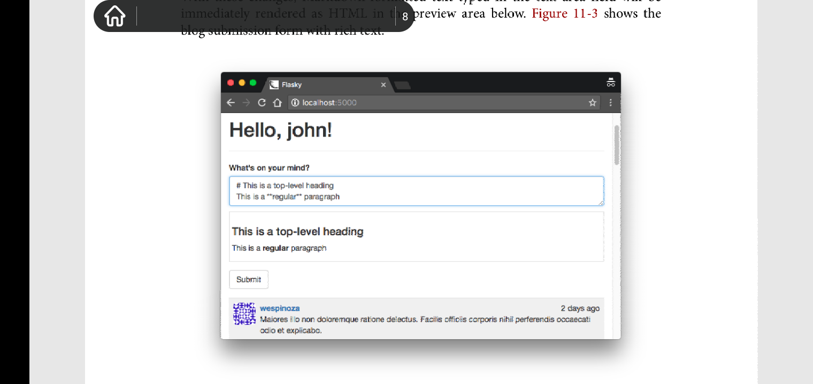
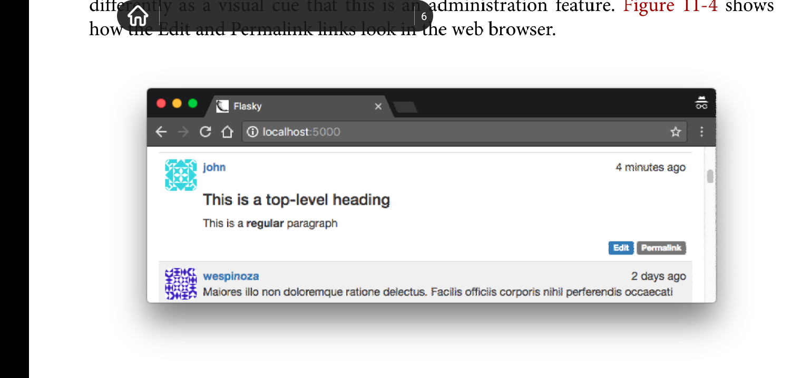

Chapter 11: Blog Posts
Overview
本章专注于实现本app的主要功能--允许用户查看和编写博客日志。本章你将学到新技术: 重用模版， 长列表分页， 使用富文本。
Blog Post Submission and Display
为了支持博客日志，需要添加一个新的数据库表模型来表示博客日志。以下是博客表定义:
# app/models.py: Post model
class Post(db.Model):
__tablename__ = 'posts'
body = db.Column(db.Text)
timestamp = db.Column(db.DateTime, index=True, default=datetime.utcnow)
author_id = db.Column(db.Integer, db.ForeignKey('users.id'))
class User(UserMixin, db.Model):
#...
posts = db.relationship('Post', backref="author", lazy='dynamic')
一个博客日志由body, 时间戳和来自于User的一对多关系组成。由db.Text定义的body意味着内容长度无限制。
主页中显示的博客表单允许用户编写博客。以下是该表单的定义:
# app/main/forms.py: blog post form
class PostForm(FlaskForm):
body = TextAreaField('What is on your mind?', validators=[DataRequired()])
submit = SubmitField('Submit')
由index视图函数来处理该表单，传递数据库中所有的博客到模版来渲染:
# app/main/views.py: home page route with a blog post
@main.route('/', methods=['GET', 'POST'])
def index():
form = PostForm()
if current_user.can(Permission.WRITE) and form.validate_on_submit():
post = Post(body=form.body.data,
author = current_user._get_current_object())
db.session.add(post)
db.session.commit()
return redirect(url_for('.index'))
posts = Post.query.order_by(Post.timestamp.desc()).all()
return render_template('index.html', form=form, posts=posts)
该视图函数将表单和所有的博客日志传递给模版来渲染。该博客日志列表经过降序排序处理。显而易见。
注意这里的博客日志的author属性的值由current_user._get_current_object()指定。flask-login的current_user变量像大多数上下文变量一样属于本地线程代理对象(thread-local proxy object).该对象与实际的用户对象在使用上完全一致，它只是简单封装了用户对象而已，底层的实际用户对象可以调用他的_get_current_object()方法来获取。
在主页中的欢迎语之下，依次渲染博客表单和博客日志列表。实际上渲染的博客日志是所有博客日志按照推送时间来排列的，最新的博客推送显示在列表顶部，最晚的在底部。以下是支持博客日志推送时间线的主页模版:
# app/templates/index.html: home page template with blog posts
{% extends 'base.html' %}
{% import 'bootstrap/wtf.html' as wtf %}
....
<div>
{% if current_user.can(Permission.WRITE) %}
{{ wtf.quick_form(form) }}
{% endif %}
</div>
<ul class="posts">
{% for post in posts %}
<li class="post">
<div class="profile-thumbnail">
<a href="{{ url_for('.user', username=post.author.username) }}">
<img class="img-rounded profile-thumbnail" src="{{ post.author.gravatar() }}">
</a>
</div>
<div class="post-date">
{{ moment(post.timestamp).fromNow() }}
</div>
<div class="post-author">
<a href="{{ url_for('.user', username=post.author.username) }}">
{{ post.author.username }}
</a>
</div>
<div class="post-body">
{{ post.body }}
</div>
</li>
{% endfor %}
</ul>
注意这里使用user.can方法来检测当前用户是否具有WRITE POST权利，如果没有，则跳过博客表单渲染。博客列表使用ul来表示，使用自定义css类给其添加外观。还使用了gravatar picture.完善自定义的css类。

Blog Posts on Profile Pages
可以在用户信息配置界面显示该用户发布的属于他的博客日历列表。以下是修改后的视图函数:
# app/main/views.py: profile page route with blog posts
@main.route('/user/<username>')
def user(username):
user = User.query.filter_by(username=username).first()
if user is None:
abort(404)
posts = user.posts.order_by(Post.timestamp.desc()).all()
return render_template('user.html', user=user, posts=posts)
可以通过User.posts关系来获取特定用户发布的一系列博客日志。该关系和query对象使用方式一样(由lazy='dynamic' 参数指定)，因此，过滤器比如order_by()可以用在该关系上，就像用在普通query对象上一样。
user.html模版需要和index.html中一样的用于渲染博客日志列表的ul元素树，但是同时维护两个模版中的相同的代码片段毫无意义。而flask的include命令可以用来处理这种情况。渲染博客列表的html代码片段可以移动到一个独立的文件内，而使用时，index.html和user.html可以使用include命令来包含这个文件中的代码片段。
以下是include命令在user.html中的使用:
# app/templates/user.html: profile page template with blog posts
...
<h3>Posts by {{ user.username }}</h3>
{% include '_posts.html' %}
....
为了完成这种重构，index.html中的ul元素树需要移动到一个单独的文件_posts.html, 并用include命令来替换原先的代码。注意在_posts.html文件名中前缀下划线并不是强制规定，只是用来区分是完整模版还是部分模版。
Paginating Long Blog Post Lists
Overview
随着网站体量和博客数量增大，在主页和用户配置页面显示所有的博客列表变得缓慢以及不现实。浏览器得花费大量时间来生成，下载以及渲染内容很多的单一页面，因此随着页面内容增多，用户体验逐渐变差。解决办法是对数据进行分页，每次只显示一页。
Creating Fake Blog Post Data
为了使用多页博客日志功能，拥有一个存储大量数据的测试版数据库是必须的。手动往测试数据库中添加数据不仅耗费时间而且任务繁重， 这里可以采用数据自动化生成技术。faker库是最通用的虚假数据生成库。
严格说，faker库并不是网站运行的依赖库， 它只在开发期间派上用场。为了区分运行时依赖和开发时依赖，可以用requirements子文件夹来取代原先的requirement.txt， 该子文件夹存储了不同的依赖集。在该文件夹下，可以使用dev.txt来记录开发时依赖，而prod.txt文件记录产品级依赖。因为两个文件会存在依赖重叠，所以可以用common.txt文件来记录开发级依赖和产品级依赖的公有依赖。而在dev.txt和prod.txt文件里可以使用-r前缀来导入这些公有的依赖。以下是dev.txt文件的内容:
# requirements/dev.txt: development requirements file -r common.txt fake==0.7.18
以下是产生虚假数据的两个函数:
# app/fake.py: generating fake users and blog posts from random import randint from sqlalchemy.exc import IntegrityError from faker import Faker from . import db from .models import User, Post def users(count=100): fake = Faker() i = 0 while i < count: u = User(email=fake.email(), username=fake.user_name(), password='password', confirmed=True, name=fake.name(), location=fake.city(), about_me=fake.text(), member_since=fake.past_date()) db.session.add(u) try: db.session.commit() i += 1 except IntegrityError: db.session.rollback() def posts(count=100): fake = Faker() user_count = User.query.count() for i in range(count): u = User.query.offset(randint(0, user_count - 1)).first() p = Post(body=fake.text(), timestamp=fake.past_date(), author=u) db.session.add(p) db.session.commit()
上述虚假对象的属性值由Faker包提供的随机数据生成器产生，该包可以产生贴近现实的name, emails, sentence以及很多其他的属性。
因为email和username要求值唯一，而Faker完全使用随机数据生成，因此这里会有重复产生重复的数据的风险。如果产生了重复的数据，数据会话提交会产生一个IntegrityError，该错误通过回滚会话来取消重复的用户来解决。循环直到产生指定数量的数据后才会停止。
随机生成博客的作者也得是随机产生的。这里使用查询过滤器来实现。该过滤器丢弃由参数指定数量的结果。通过设置随机偏移，然后哦调用first()，这样每次都会产生一个不同的用户。
该功能可以在shell对话中使用，来产生大量的虚假用户和博客。
(venv) $ flask shell >>> from app import fake >>> fake.users(100) >>> fake.postS(100)
Rendering In Pages
以下是home路由的修订，以支持分页功能:
# app/main/views.py: paginating the blog post list
@main.route('/', methods=['POST', 'GET'])
def index():
#...
page = request.args.get('page', 1, type=int)
pagination = Post.query.order_by(Post.timestamp.desc()).paginate(
page, per_page=current_app.config['FLASKY_POSTS_PRE_PAGE'],
error_out=False)
posts = pagination.items
return render_template('index.html', form=form, posts=posts, pagination=pagination)
要被渲染的页号是从request's query string中获取的，作为request.args的一部分。如果页号未指定，则使用默认页号1.type=int选项用于确保当参数不能正确转换成整形时，值使用默认值1。
为了获取单页数据，原先的query对象的all()方法调用被paginate()方法调用替换。paginate()方法必须传入一个页号的参数。而可选的per_page选项可指定每页的item数量。如果该选项未指定，则使用默认值每页显示20条数据。另外一个可选的参数error_out指定当页号超出指定的范围时是否抛出404错误码，默认值是True.如果error_out选项为False，则当页号超出有效范围时，当前页面不显示任何数据，为空页面。为了手动配置每页数据的数量，可以向config.py添加应用级变量FLASKY_POSTS_PER_PAGE来指定每页显示的博客数量。
上述功能使得主页只显示指定数量的博客列表。如果想查看下一页，可以在浏览器的地址栏上使用查询字符串?page=2来实现。
Adding a Pagination Widget
方法paginate()返回一个由flask-sqlalchemy定义的Pagination类的实例对象。该对象包含多个用于在模板中产生分页链接的数个属性，因此，该对象必须被传入模版中来渲染分页导航链接。以下是pagination对象拥有的属性:

以下是该对象包含的一些方法:

装备这个强大的对象以及css分页类，使得在模板中渲染分页footer变得相当容易。以下是使用jinja2宏来实现该功能:
# app/templates/_macros.html: pagination template macro
#该模版中使用的url_for()方法中，因为page选项不是动态路由中定义的动态变量，因此page变量会被添加到url末尾，以查询字符串的形式存在。
# 注意用jinja2条件语句渲染html元素属性时，得使用空格来使元素名称值和条件语句前后保持距离，这样要被渲染的元素才会被正确渲染。
{% macro pagination_widget(pagination, endpoint) %}
<ul class="pagination">
<li{% if not pagination.has_pre %} class="disabled"{% endif %}>
<a href="{% if pagination.has_pre %}{{ url_for(endpoint, page = pagination.page - 1, **kwargs) }}{% else %}#{% endif %}">
« # 这里的转义字符代表«
</a>
</li>
{% for p in pagination.iter_pages() %}
{% if p %}
{% if p == pagination.page %}
<li class="active">
<a href="{{ url_for(endpoint, page = p, **kwargs) }}">{{ p }} </a>
</li>
{% else %}
<li>
<a href="{{ url_for(endpoint, page = p, **kwargs) }}">{{ p }}</a>
</li>
{% endif %}
{% else %}
<li class="disabled"><a href="#">…</a></li> # 这里的转义字符代表…
{% endif %}
{% endfor %}
<li {% if not pagination.has_next %} class="disabled"{% endif %}>
<a href="{% if pagination.has_next %}{{ url_for(endpoint, page = pagination.page + 1, **kwargs) }}{% else %}#{% endif %}">
» # 这里的转义字符代表»
</a>
</li>
</ul>
{% endmacro %}
该宏创建了一个bootstrap分页widget，该对象以ul元素来表示。该widget依次定义了以下页面链接:
- 定义了一个previous page链接。如果当前页是分页列表首页的话，该链接会被css类disabled来禁用跳转。
- 中间的列表项定义了由分页对象的iter_pages()迭代器返回的所有页面链接。这些页面链接以可以点击的页号来显示。当前页使用css类active来高亮。页号之间省略的其他页号使用省略符号来表示。
- 最后定义了一个next page链接。如果当前页处于页面列表的最后一页，该链接会被禁用。
jinja2宏定义的参数列表中无需包含*args或者**kwargs就可以接收宏调用时传入的额外关键字参数。而在宏内部应该是预定义了*args和**kwargs，因此，该宏内部通过预定义的**kwargs来将宏接收到的额外关键字参数，传递给宏内部的url_for()函数中，用以产生页面链接。这种功能也可以用在动态路由中，比如用户配置路由中的username动态部分，额外的参数用以配置该用户。相当灵活。
pagination_widget宏可以添加到index.html和user.html中各自_posts.html导入的后面。以下是在主页模版中该宏的使用:
# app/templates/index.html: pagination footer for blog posts lists
{% extends 'base.html' %}
{% import 'bootstrap/wtf.html' as wtf %}
{% import '_macros.html' as macros %}
....
{% include '_posts.html' %}
<div class="pagination">
{{ macros.pagination_widget(pagination, '.index') }}
</div>
{% endif %}
以下是分页效果:

Rich-Text Posts With MarkDown And Flask-PageDown
Overview
普通文本用于短消息和状态更新是足够的，但是对于喜欢写长文章的用户会发现普通文本存在很多格式化上的限制。本节用于键入博客日志的文本框将更新，以支持MarkDown语义以及展示富文本的预览。
实现上述需求，需要使用到一些包:
- PageDown, 一个javascript实现的，客户端MarkDown到html转换库。支持markdown语义和以html形式预览markdown内容
- Flask-PageDown, flask简单封装了PageDown库，并且使得PageDown和Flask-WTF表单能够协同工作。
- MarkDown, 一个python实现的服务端MarkDown到HTML转换库。
- Bleach, 一个python实现的HTML净化器。
Using Flask-PageDown
flask-pagedown扩展定义了一个和wtforms的TextAreaField类类似的PageDownField类。在这之前，必须初始化该扩展。
# app/__init__.py: Flask-PageDown初始化 from flask_pagedown import PageDown #.... pagedown = PageDown() #.... def create_app(config_name): #... pagedown.init_app(app) #...
为了转换主页中的文本区域控件到MarkDown富文本编辑器，PostForm的body字段必须改变成PageDownFiled字段:
# app/main/forms.py: MarkDown-enabled post form
from flask_pagedown.fields import PageDownField
class PostForm(FlaskForm):
body = PageDownField("What's on your mind?", validators=[DataRequired()])
submit = SubmitField('Submit')
MarkDown文本预览也由PageDown库生成。而Flask-PageDown简化了该任务，可以使用其预定义的宏来加载文本预览所需的js脚本:
# app/templates/index.html: Flask-PageDown template daclaration
{% block scripts %}
{{ super() }}
{{ pagedown.include_pagedown() }} # pagedown被集成到了jinja2中，在使用moment扩展时，使用类似的语句来加载脚本，moment.include_moment()
{% endblock %}
这里的预览有意思，用户在富文本框中输入的html或者markdown会实时显示。

Handling Rich Text On the Server
当表单提交时，包含了markdown或者html的富文本使用POST请求被提交；以html预览的内容被丢弃。发送生成的html预览代码是有潜在风险的，因为攻击者很容易就可以伪造和源markdown文本不匹配的html代码，然后将该恶意html代码发送。为了避免任何风险，只能发送原始的markdown文本给服务器，由服务器将原始markdown文本转换成相应的html文本，这种转化是使用python实现的markdown到html的转换器----MarkDown.转换后的html代码还要使用Bleach库来净化，过滤掉那些app不允许出现的html元素。
可以在_posts.html中将来自于服务器的markdown形式的博客内容转换成html形式的，(服务器上的markdown文本发送给客户端，由客户端负责将markdown文本转换成可供显示的html内容)但是这不高效，因为每次posts需要渲染到页面上时，都需要执行转换操作(对于同一个博客列表页面，每次刷新时，都会执行转化)。解决办法是在服务器上同时存储markdown文本和其相应的html版本。为了避免累赘，这种转化可以在博客在数据库中创建时执行，然后将转换后的html版本保存到数据库。可以将转换后的html内容保存在Post表中的新字段里，这样模版可以直接访问该html版本内容。原始的markdown文本也保存在数据库中，以便用户日后修改它。以下是修改后的Post表:
# app/models.py: markdown text handling in the model from markdown import markdown import bleach class Post(db.Model): #... body_html = db.Column(db.Text) #... @staticmethod def on_changed_body(target, value, oldvalue, initiator): allowed_tags = ['a', 'abbr', 'acronym', 'b', 'blockquote', 'code', 'em', 'i', 'li', 'ol', 'pre', 'strong', 'ul', 'h1', h2', 'h3', 'p'] target.body_html = bleach.linkfy(bleach.clean( markdown(value, output_format='html', tags=allowed_tags, strip=True)) db.event.listen(Post.body, 'set', Post.on_changed_body)
on_changed_body()函数注册成为SQLAlchemy的一个set事件监听器，其作用是当body字段的值发生改变时，自动调用on_changed_body()函数。该事件处理器将源markdown文本转换成的html版本内容存储在body_html字段里，这实现了高效自动化转换markdown文本到html文本。
以下是实际转换的步骤。首先markdown()方法将markdown文本转换成html版本，该处理结果被传入clean方法，而后clean()使用allowed_tag,从结果集中过滤掉那些不在allowed_tags白名单中的html标签。最后一步转换是， linkify()方法将markdown中任何以文本形式存在的url包含到链接元素<a>中。这最后的一步是必要的，因为markdown不具备这种自动链接生成，但大量使用链接是很普遍的。在客户端，PageDown通过可选的扩展库来支持该功能，因此linkfy()满足在服务器上的需求。
最后需要将模版中的post.body用post.body_html取代。
# app/templates/_posts.html: use the HTML version of the post body in the template
....
<div class="post-body">
{% if post.body_html %}
{{ post.body_html | safe }}
{% else %}
{{ post.body }}
{% endif %}
</div>
.....
| safe 后缀用于告诉jinja2不要转义占位变量中的html代码，使其能直接渲染到界面上。处于安全原因，jinja2默认转义模版中变量的值，但是Markdown-generated HTML是由服务器生成的，因此直接渲染该html是安全的。s
Permanent Links to Blog Posts
网站用户可能会在社交网络上将某个博客的链接分享给好友。因此，每一个博客日志都会被赋予唯一url的页面来显示它。以下是该功能的视图函数定义:
# app/main/views.py: enabling permanent links to posts
@main.route('/post/<int:id>')
def post(id):
post = Post.query.get_or_404(id)
return render_template('post.html', posts=[post]) # posts 是列表
博客日志的url使用博客独立的id来构造。
对于绝大多数网站来说，在博客分享链接中包含可读性文本比存粹的id要更合适。这可以向Post模型中添加新字段slug来实现，该字段值来源于博客的标题或者博客首行内容。
将博客链接添加进_posts.html中每个博客的下方:
# app/templates/_posts.html: adding permanent links to posts
<ul class="posts">
{% for post in posts %}
<li class="post">
.....
<div class="post-footer">
<a href="{{ url_for('.post', id=post.id) }}">
<span class="label label-default">Permalink</span>
</a>
</div>
</li>
{% endfor %}
</ul>
更新使用_posts.html的posts.html:
# app/templates/post.html: permanent link template
{% extend 'base.html' %}
{% block title %}Flasky - Post{% endblock %}
{% block content %}
{% include '_posts.html' %}
{% endblock %}
Blog Post Editor
博客最后一个功能是博客编辑器，该编辑器允许用户修改其已有的博客。该编辑器存在于一个独立的模版文件中，也是使用Flask-PageDown,因此向博客预览之下添加一个文本框，在这里用户可以修改其中的markdown文本。
# app/templates/edit_post.html: edit blog post template
{% extends 'base.html' %}
{% import 'bootstrap/wtf.html' as wtf %}
{% block title %}Flasky - Edit Post{% endblock %}
{% block content %}
<div>
<h1> Edit Post </h1>
</div>
<div>
{{ wtf.quick_form(form) }}
</div>
{% endblock %}
{% block scripts %}
{{ super() }}
{{ pagedown.include_pagedown() }}
{% endblock %}
以下是支持博客编辑器的视图函数:
# app/main/views.py: edit blog post route
@main.route('/edit/<int:id>', methods=['POST', 'GET'])
@login_required
def edit(id):
post = Post.query.get_or_404(id)
if current_user != post.author and \
not current_user.can(Permission.ADMIN):
abort(403)
form = PostForm()
if form.validate_on_submit():
post.body = form.body.data
db.session.add(post)
db.session.commit()
flash('The post has been updated.')
return redirect(url_for('.post', id=post.id))
form.body.data = post.body
return render_template('edit_post.html', form=form)
上述视图函数只允许博客作者编辑自己的博客，以及管理员可以编辑任何人的博客。如果某用户尝试编辑其他用户的博客，app会返回403错误。
以下是向博客模版中添加编辑器链接的代码:
# app/templates/_posts.html: adding the edit blog post link
&ul class="posts">
{% for post in posts %}
<li class='post'>
.....
<div class="post-content">
....
<div class="post-footer">
....
{% if current_user == post.author %}
<a href="{{ url_for('.edit', id=post.id) }}">
<span class="label label-primary">Edit</span>
</a>
{% elif current_user.is_administrator() %}
<a href="{{ url_for('.edit', id=post.id) }}">
<span class="label label-danger">
Edit [ADMIN]
</span>
</a>
{% endif %}
</div>
</div>
</li>
{% endfor %}
</ul>
在属于当前用户的博客下面添加了编辑标签。而对于当前用户是管理员的情况下，一个红色的编辑标签被添加到所有博客下面。 